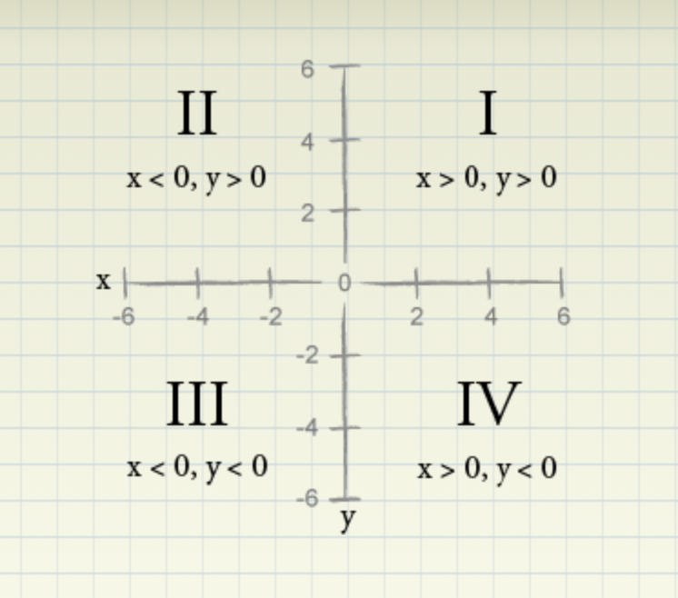

Algebra
Contents
Algebra¶
“Algebra is the generalization of arithmetic in which letters are used to represent numbers in quantities.”
“Algebraic principles are enables us to examine relationships among those quantities.”
Variables¶
Variable is the unknown quantity represented by a letter.
Value of one variable may depend upon the values of other variables.
It is crucial to know how different variables are related to each other.
Function of Single Variable¶
“A function of one variable is a rule by which the numerical value of a single variable (the independent variable) yields a numerical output value (the dependent variable).”
\(y = f(x)\) indicates that the dependent variable \(y\) is determined from the independent variable \(x\) with function \(f\).
“A function of one variable of the form \(f(x) = ax + b\) is called a linear function.”
Functions of More than One Variable¶
A function of more than one variable is known as multivariate function.
“A multivariate function \(f(x_1, x_2, ... x_n)\) of variables \(x_1\), \(x_2\), …\(x_n\) is a linear function if there exist numbers \(a\), \(b_1\), \(b_2\), …bn (often called constants) such that \(f(x_1, x_2, ...x_n) = a + b_1x_1 + b_2x_2 + ...b_nx_n\).”
Linear Equation¶
A linear equation is a mathematical statement that expresses equality between two mathematical quantities.
A quantity satisfies the linear equation is a solution of the linear equation.
Adding a value to both sides of equation does not change the solutions of equation.
Multiplying and dividing the equation with same non-zero number does not change the solutions of equation.
Cartesian Plane¶
“Cartesian Plane - A system by which points in the plane are defined by two numbers: the point’s x and y coordinates.” 
Straight Line¶
Many relationships are represented by a straight line itself.
In a straight line, the slope remains constant for every value.
Slop is the change in dependent variable for 1 unit change in independent variable.
Slope intercept form of straight line - \(y = mx+c\). Here \(m\) is the slope of the line and \(c\) is the y-intercept.
Slope of the line represents it’s steepness.
Two lines with same slope are parrallel.
Point Slope Form of the line equation: \(\frac{y - y_0}{x -x_0} = m\).
\(y = a\) is a horizontal line parallel to x-axis while \(x=b\) is a vertical line parallel to y-axis.
General form of a line equation: \(ax + by = c\) where \(a\), \(b\), and \(c\) are constants.
Finding Solutions: Two Equations¶
The simplest way to solve two linear equations is by plotting both the euqations on the cartesian and the point where the two lines intersect is the solution satisfying both the given equations.
One of the problem with the graphical approach is that it is difficult to precisely identify the x and y co-ordinates of the solutions.
A system of linear equations can have a unique solution (lines intersecting only at one point), no solution (non-intersecting lines or parallel lines) and infinitely many solutions (overlapping lines). This is true irrespective of the number of variables and the number of equations that are present.
The other method to solve the system of linear equations is the method of substitution where one variable is represented in the form of another and then substituted in another equation to get the required solution.
Linear Inequalities: One Variable¶
“A linear inequality in one variable looks like ax + b < cx + d, ax + b > cx + d, ax + b ≤ cx + d, or ax + b ≥ cx + d.”
“If you add the same number to both sides of an inequality, the resulting inequality has the same direction as the original inequality.”
“If you multiply or divide both sides of an inequality by the same positive number, the resulting inequality has the same direction as the original inequality.”
“If you multiply or divide both sides of an inequality by the same negative number, the resulting inequality has the opposite direction as the original inequality.”
Linear Inequalities: Two Variables¶
A linear inequality in two variable looks like ax + by ≤ cx + dy or ax + by ≥ cx + dy.
Polynomials and Quadratic functions¶
“A polynomial is a function in the form f(x) = a0 + a1x + a2x2 + … anxn, where n is a positive integer.”
“The highest power of x with a nonzero coefficient is called the degree of the polynomial.”
“A straight line is a first-degree polynomial. A second-degree polynomial is called a quadratic function, and a third-degree polynomial is called a cubic function.”
“A quadratic function is usually written as \(y(x) = f(x) = ax^2 + bx + c\), and the graph is known as parabola.”
Quadratic formula for finding the root(s)/solutions(s) of a quadratic equation is expressed as : \(\frac{-b \pm \sqrt{b^2-4ac}}{2a}\)
FOIL method is used for multiplying binomials ((3-p), (1-p) are examples of binomials).
F = the product of the first term in each binomial, O = the product of the two outer terms, I = the product of the two inner terms, L = the product of the last two terms in the binomial.
Powers and Exponents¶
In the term \(x^n\), \(x\) is the base and \(n\) is called the exponent.
When \(n\) is a positive integer, \(x^n\) simply means multiply \(x\) by itself \(n\) times.
Rules for dealing with exponents:
\(x^0 = 1\)
\(x^a \times x^b = x^{a+b}\)
\(\frac{x^a}{x^b} = x^{a-b}\)
\((x^a)^b = x^{ab}\)
\((\frac{x}{y})^a = \frac{x^a}{y^a}\)
\(x^{-a} = \frac{1}{x^a}\)
\((xy)^a = x^a \times y^a\)
Power function¶
“A function of the form y = f(x) = axn, where a is a constant, is known as a power function.”
” If n > 1, then the graph of the power function will show the function is increasing, and the graph will get steeper.”
“If 0 < n < 1, the graph of the power function will show that the function increases as x increases, but the graph eventually gets flatter.”
“If n < 0, the power curve will decrease as x increases, but the graph eventually gets flatter.”
Cobb-Douglas function¶
“The Cobb-Douglas production function uses exponents and is commonly used to model how the number of units produced depends on two inputs (usually K = capital and L = labor). The Cobb-Douglas function is expressed as \(f(K, L) = K^aL^{1-a}\), where \(0 < a < 1\).”
Order of Operations¶
PEMDAS rule is used to determine the order of operations.
P (Parentheses): If the expression contains parentheses, first evaluate all expressions with parentheses, working from the innermost set of parentheses out.
E (Exponents): Next, perform all operations involving exponents.
MD (Multiplication and Division): Next, perform all multiplication and division calculations from left to right.
AS (Addition and Subtraction): Finally, perform all addition and subtraction calculations from left to right.
Inverse Functions¶
“Usually we write y = f(x). If we solve for x as a function of y then we can write x = g(y). We say the function g is the inverse of the function f.”
Ratios and Percentages¶
“The ratio of two numbers simply gives us the relative sizes of the two numbers.”
“A percentage is simply mathematical shorthand for one hundredth.”
Elasticity of Demand¶
Elasticity of Demand is the sensitivity of demand to the change in price. Formally, it can be defined as the percentage change in demand that results from a 1% increase in price.
“If E < -1, the demand for a product is said to be elastic; if E > -1, the demand for a product is said to be inelastic. If product demand is elastic, a small increase in price will decrease revenue; if product demand is inelastic, a small increase in price will increase revenue. Conversely, if product demand is elastic, a small decrease in price will increase revenue; if product demand is inelastic, a small decrease in price will decrease revenue.”
“If demand \(q=ap^{-b}\), then it can be shown that for any price, demand elasticity equals \(-b\).”
Logarithms¶
“Logarithms are convenient tools that reduce a multiplication problem to an addition problem.They also simplify problems involving exponents to much simpler multiplication problems.”
the logarithm of \(x\) to the base \(b\) is \(c\) if \(b^c = x\), i.e. \(log_bx = c\).
\(log_ex = c\) and \(ln(x)=c\) are equivalent statements.
“The logarithm of a number x to base e is often called the natural logarithm of x.”
Logarithmic rules:
\(Log_b x + Log_b y = Log_b (x*y)\)
\(Log_b x - Log_b y = Log_b (x/y)\)
\(Log_b (x^c) = c \times Log_b x\)
Index Numbers¶
“An index number indicates the percentage change in a quantity, relative to a base level that is assigned a value of 100.”